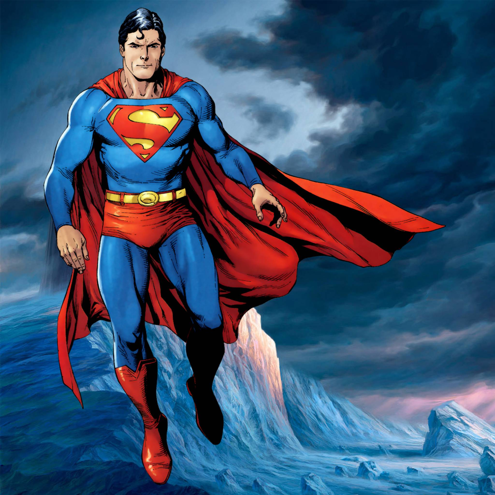

Супергерои
Составляющие супергероя
Супергерóй — персонаж, наделённый неординарными физическими способностями («суперсилами»), которые он направляет на свершение подвигов во имя общего блага.
Статья про супергероев на Википедия.ру
Топ супергероев
-
Супермен
-
Бетмен
-
Капитан Америка
- Халк
Мой любимый супергерой

Супермен
Суперме́н (англ. Superman; «сверхчеловек») — супергерой комиксов, которые выпускаются компанией DC Comics. Он считается иконой американской культуры
Ютуб